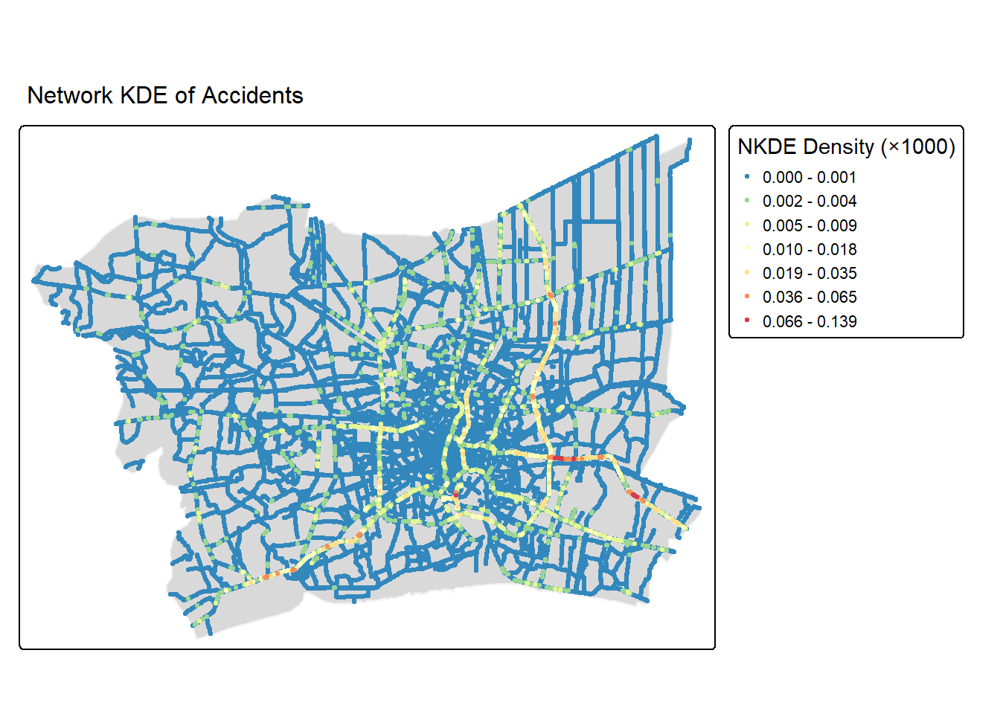
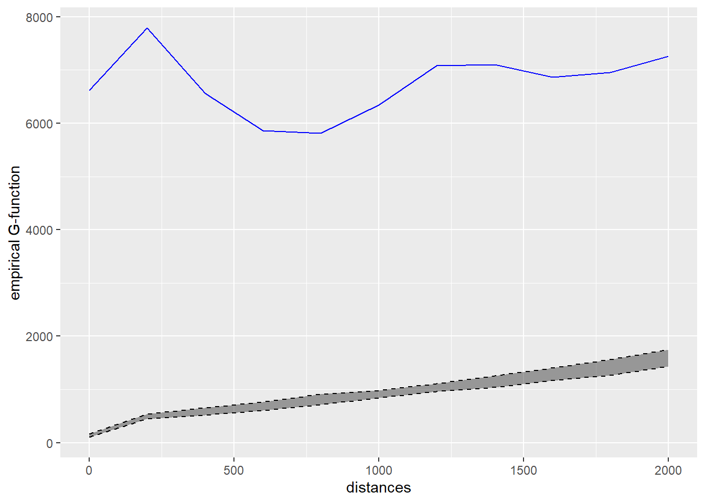
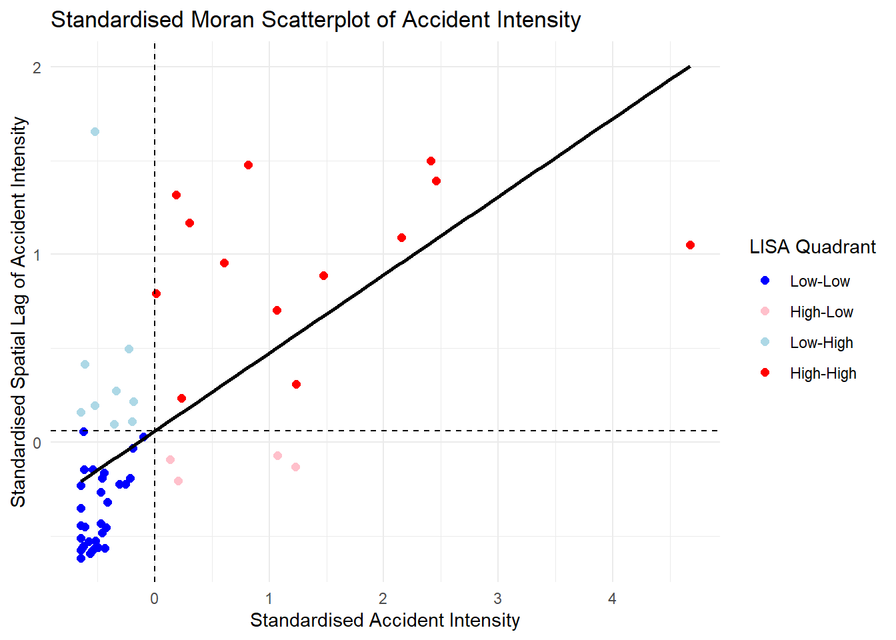
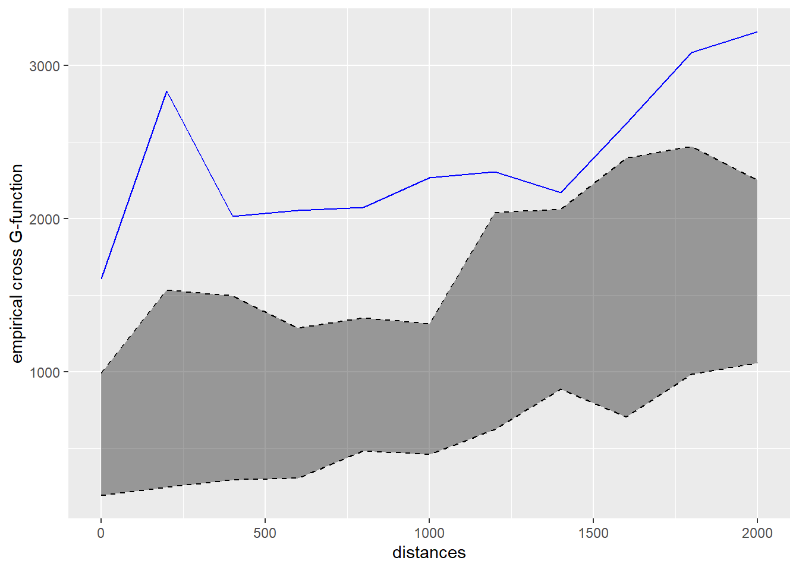

1. Research Questions & Objectives
Primary Research Questions
- First-Order Property: Do 2022 traffic accidents across the Bangkok Metropolitan Region (BMR) occur with uniform intensity, or do they form distinct spatial hot spots?
- Second-Order Property: Do accident point patterns show statistically significant spatial interaction (clustering or inhibition) when constrained to the physical road network?
Core Analytical Objectives
- Integrate boundaries, road networks and accident point events for analysis.
- Investigate first-order properties using planar (quadrat analysis) and networked-constrained (NKDE) methods.
- Investigate second-order properties using network-constrained K- and G-functions.
- Translate analysis insights into public-safety recommendations.
2. Study Area & Spatial Scope
- Study Window: Bangkok Metropolitan Region (BMR), Thailand.
- Provinces Included (6): Bangkok, Nonthaburi, Pathum Thani, Samut Prakan, Nakhon Pathom and Samut Sakhon.
- Coordinate Reference System: Reprojected to WGS 84 / UTM Zone 47N (EPSG: 32647).
3. Data Sources & Quality Handling
Datasets Used
- Boundaries:
geoBoundaries-THA-ADM1-all.shp (Province limits).
- Accidents:
thai_road_accident_2019_2022.csv (Point events).
- Roads:
gis_osm_roads_free_1.shp (Filtered to main road classes).
Data Quality & Pre-processing
- Temporal & Spatial Subsetting: Extracted 2022 records strictly within BMR boundaries.
- Missing & Erroneous Values: Removed 189 records missing coordinate attributes. Retained 5 records with 0 recorded vehicles after verifying descriptions.
- Spatial Alignment & Overlaps: Filtered 4 points falling outside the boundary window. Applied jittering (
rjitter()) to resolve co-located coordinates but no point event was affected. Final dataset: 3,589 accident points.
4. Analytical Approach: First-Order SPPA
- Exploratory step for chi-square and intensity visual observation
- p-value of < 0.05, thus rejecting null hypothesis of CSR
- One cell with extreme intensity value, i.e., quadrat where Suvarnabhumi Airport is located

- Estimates density using shortest-path distances along the network
- Observed density concentrating heavily along a small number of specific roads, with the brightest red segments in the same areas as the quadrat analysis, i.e., quadrat 23

5. Analytical Approach: Second-Order SPPA
- Tested whether quadrat 23’s elevated accident rate reflects a broader area cluster.
- Observed blue line sits definitively above the simulation envelope across the entire 0 to 2000m range tested. Null hypothesis was rejected,

- Measured nearest-neighbor distance distributions along network edges.
- Complements K-function finding to check clustering at difference distances
- Observed blue line sits definitively above the simulated envelope, across the entire 0 to 2000m range tested. Null hypothesis rejected.

6. Analytical Approach: Value-Added Analysis
To answer two follow-up questions: is the hotspot a real cluster or an outlier, and do fatal accidents cluster with the non-fatal accidents
- Tested whether quadrat 23’s elevated accident rate reflects a broader area cluster.
- Observed clear separation of groups in scatterplot.
- Reinforces cluster finding that quadrat 23 is the most severe point within a cluster, rather than an isolated spike

- Bivariate cross-K/G function, to test whether fatal and non-fatal accidents are spatially associated with one another along the network


- Traffic accidents across BMR are non-random and highly clustered along primary arterial road corridors.
- Core urban centers and major expressways/interchanges exhibit significant density spikes compared to peripheral roads.
- Significant Clustering: Network K-function simulations demonstrate statistically significant clustering at multiple network distance bands (\(p < 0.05\)).
- High-density clusters concentrate along main transit corridors connecting Bangkok to adjoining industrial and suburban provinces (Pathum Thani, Samut Prakan, and Samut Sakhon).
8. Visual Evidence & Hotspots
- Corridor Concentration: High-risk segments strictly coincide with high-capacity road classes (motorways, trunks, primary roads).
- Spatial Distribution:
- Primary hotspots cluster densely around major suburban entry/exit routes and primary intersections in Bangkok.
- Rural/secondary road networks exhibit low, dispersed baseline accident frequencies.
- Geovisualization Integration: Combined
tmap network density visualizations clearly highlight spatial disparities in risk that unconstrained planar maps obscure.
9. Public-Safety Implications & Recommendations
Targeted Enforcement: Deploy automated speed cameras and traffic enforcement along identified high-density NKDE arterial corridors rather than uniform district distribution.
Optimized EMS Placement: Position Emergency Medical Services (EMS) response units near critical inter-provincial highway interchanges to cut emergency response times.
Engineering Audits: High-density accident corridors highlight structural road engineering flaws (e.g., risky lane merges, poor lighting, or missing pedestrian crossings).
Prioritise Infrastructure Audits: Focus road safety investments and structural redesign on top-quantile NKDE risk corridors.
Dynamic Spatiotemporal Models: Expand SPPA modeling to include temporal slicing (rush-hour vs. overnight and rainy season).
Cross-Border Safety Task Force: Form a joint traffic safety council spanning Bangkok, Pathum Thani, Samut Prakan, and Nonthaburi to co-manage shared high-risk inter-provincial highways.
10. Methodological Limitations
- Road Network Simplification: Analysis was restricted to main road classifications (motorway, trunk, primary, secondary, tertiary), excluding local service roads.
- Reporting & Location Bias: Reliance on GPS coordinates reported in primary accident logs; minor spatial misalignments or geo-referencing errors may exist.
- Temporal Aggregation: 2022 accident data was analyzed as a single static cross-section, masking diurnal, seasonal, or day-of-week temporal fluctuations.
- Attribute Depth: Analysis focuses primarily on point location and network topology, without modeling vehicle speed, road geometry (curvature), or weather interactions.